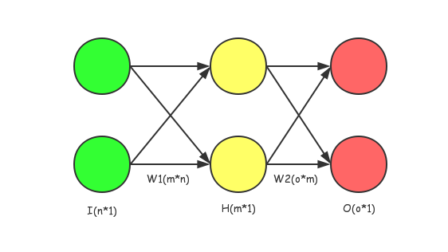

之前在上stanford的224n，原理搞懂了，但是代码还是磕磕绊绊，我认为主要原因是里面的文档写的太过于无厘头了，导致我看不懂他想干嘛，和我的思路不一样！（深信不疑）（明明是你菜）
下面是对应的problemSet里面数学推导的过程，我觉得除了数学专业的以外，每个人入门神经网络的时候都被梯度下降，目标函数相关的数学原理坑到过，其最大的坑应该在于：这个变量，他是一个标量，还是一个向量？是一个常数，还是一个矩阵？希望同样是学渣的在下能帮同样是数学学渣的读者们理清一些思路，权当是抛砖引玉了。
当然由于在下是数学学渣，所以难免会有理解错误的地方，非常欢迎讨论和指正。
由于是边推导边写的文档，可能存在一点不方便阅读的地方，如果你看到这个的话说明还在编辑修改中。
problem 1
softmax的特殊规则推导
试证：
softmax函数定义为：
根据有关规定(鬼才知道哪里规定了一个对于一个函数输入是一个矩阵则输出必须是一个矩阵)
$x=[1,2]^T$ 这样的一个矩阵，求 $softmax(x)$ ,其结果是：
那么说说之前的证明，其实很好证：
因为证明了 $softmax(x)=softmax(x+c)$，所以说我们可以用在算$softmax(x)$的时候用设$c=max(x)$(即矩阵中最大的一个元素)，得到以下式子：
来提高计算稳定性。
至于为什么能提高，可以自己想一想。(下面是答案）
防止$e^x$中x过大导致数值溢出反向传播推导
图例

说明
这是一个比较简单的多分类神经网络，其输入是 $I_{n\times 1}$ ，假设激活函数为
,输出以后通过
得到向量$\hat{Y}_{o\times 1}$
将$\hat{Y}_{o\times 1}$通过交叉熵公式得出结果
设label为 $Y_{o\times 1}$ 且其为one-hot key,则交叉熵公式为：
例子：求导 $W2$
对一个前向传播求出的
求关于$W2$：
注，B矩阵是每个神经元的bias，没有在图中表示，想要了解可自行百度(:з)∠)
$w_{11}$的偏导则为：
注意下这边不能直接用链式法则展开，不然遇到中间求矩阵导的情况就彻底GG了。以下为推导：
接下来对于
进行求导，即求：
那么这么需要一个变形，即：
而关于softmax的偏导如下，对于
这里将$\sum^{o}_{j=1}$的o改成了n,j改成k来避免混淆。
做关于$o_j$的推导
即求
,为了方便起见，约定
此时若$j=i$，则：
最后一步的转化是为了方便统一格式
若$j\neq{i}$,则：
那么进行总结
刚才的问题是求
根据之前的约定
那么，带入$(1)$求其通解即是：
这里有些跳步，觉得疑惑的读者可以用纸笔带入（1）算一下……
那么，在这个多分类中我们采用one-hot key编码，仔细想一下，就可以发现:假设one-hot key中1在第$num$位，那么如果当所求的数字$j=num$时，得到的结果会是：
如果$j\neq{num}$,那么所得的数字就是：
那么，总结上述提到的几个公式：
然后对于$w_{jk}$的最终结果
如果$j=num$时，我们得到梯度为
例子：求导$W1$
因方便阅读之起见，上面的图例再用一次：
其中，$sig(X)$为：
对其求导，则易得：
我们的目的是求得
,那么易得以下公式：
注：这边的$W1_{ij}$从图中可以比较轻松的看出是hidden层第i个神经元的第j条输入的权重。
那么对于一个独立的$h_k$
的求导为：